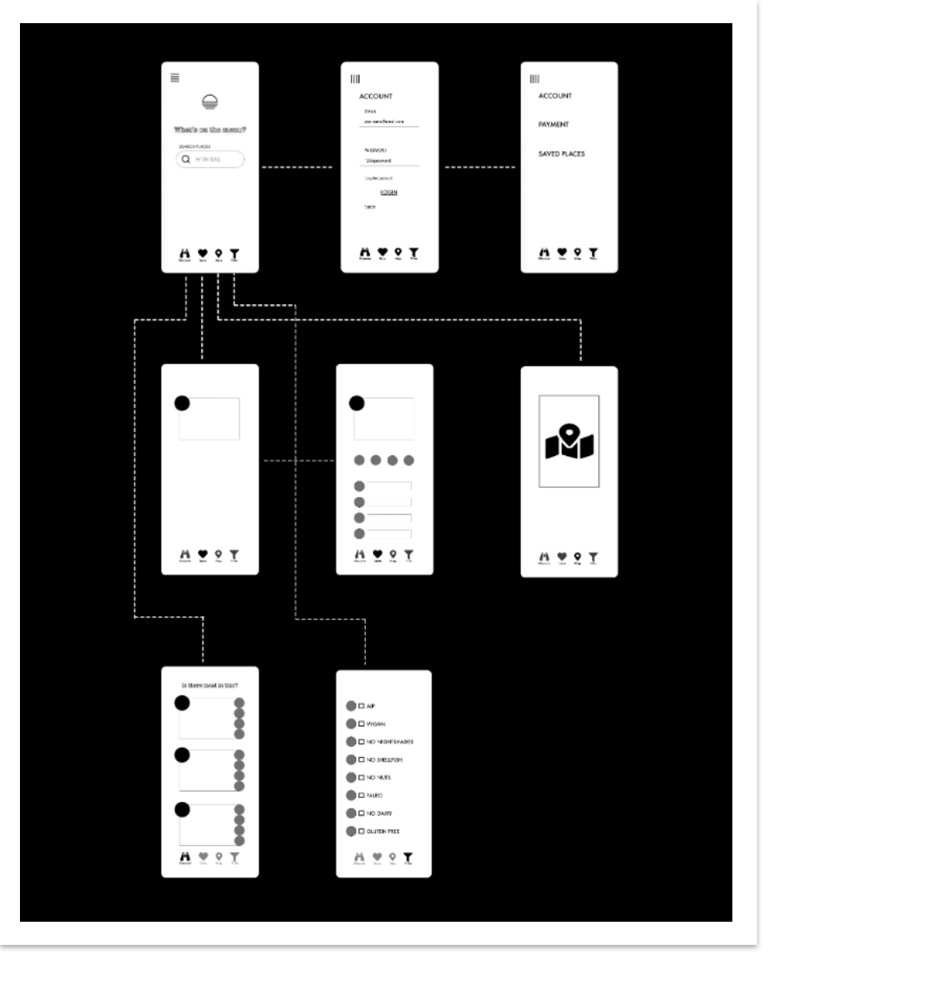
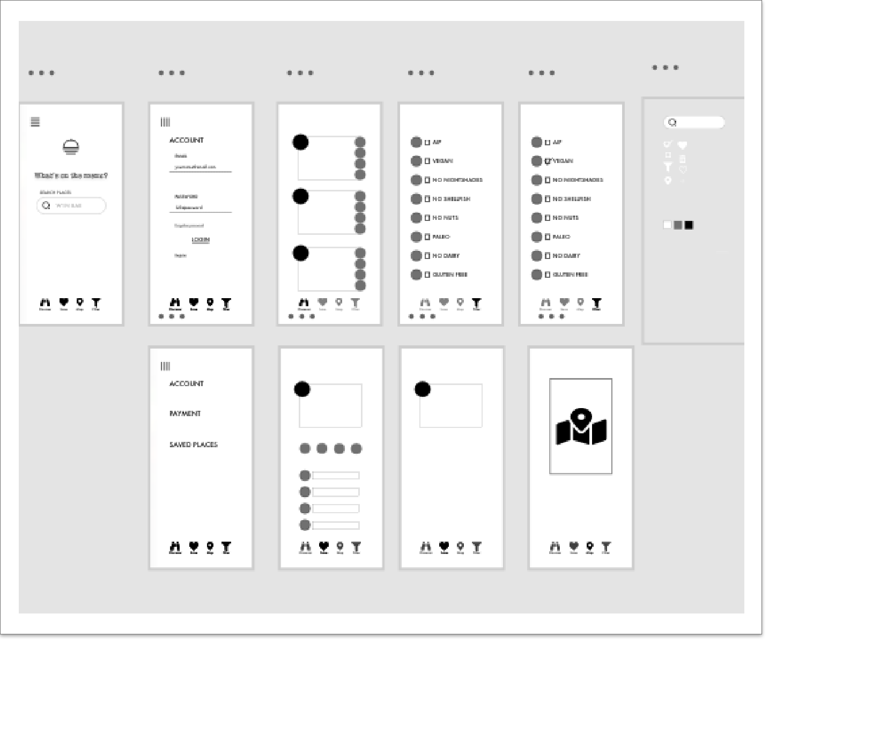
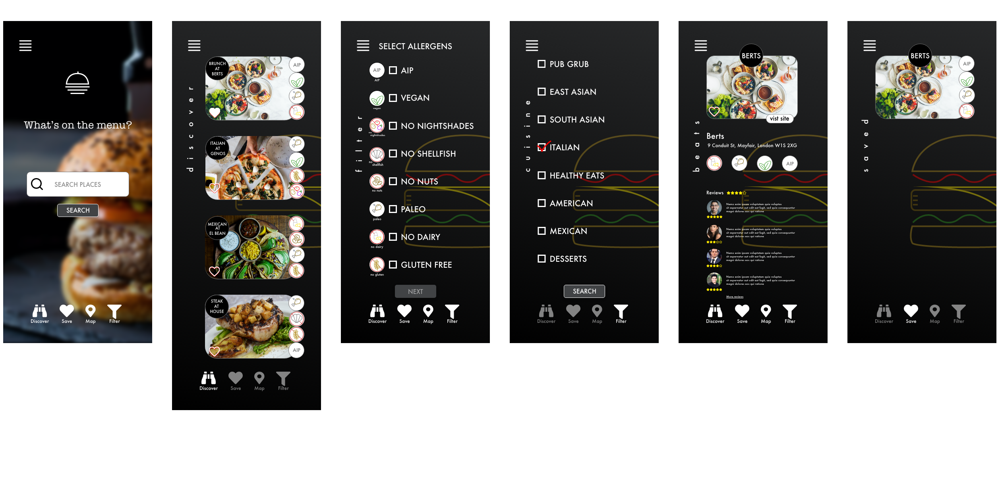

food app
Client Brief:
Client:
To build an app to find restaurants for people with dietary restrictions and allergies. There are many people who struggle to go to restaurants as the large majority don’t cater for anyone with restrictions.
Primary objectives:
To build a site for people with dietary restrictions and allergies.
Target Audience:
See Persona for site
Feature List (Product requirements):
- Discover
- Save
- Map
- Filter
- Search
- Reviews
Product Inspiration:
- foodhub.co.uk
- deliveroo.co.uk
Deliverables:
- Wireframes for client approval.
- High fidelity prototype.
- User Testing - We’ll be using Hallway testing & unmoderated remote testing.
- UI Assets for developers.
Persona:
- TARGET AUDIENCE:: Groups of friends/family, aged 20 - 40, mixed social background.
- DESCRIPTION: Looking for a restaurant to have group dinners/brunches, find a place that caters for as many dietary restrictions as possible to cover all bases.
- INTERVIEW:
5 interviews with a mix of people aged between 20 and 40, asking them what they thought of the userbility of the site.
- CATEGORIES:
From the interviews I’ve discovered that the main issues with searching for a place to eat while in a group follows:
Research and Interviews:
INTERVIEW: 5 interviews with a mix of people aged between 20 and 40, asking them what they thought of the userbility of the site.
CATEGORIES: From the interviews I’ve discovered that the main issues with searching for a place to eat while in a group follows:
Wireframes | Low Fidelity:
Wireframes | Medium Fidelity:
Wireframes | High Fidelity:
Demo Video:
Overview:
What I've learnt: What I've learnt: The only way this app will actually work would be to have a deal with the restaurants in order for them to be compliant to what we are offering. Currently with from researching not all of the dietary information is available when searching on the websites/going to the most restaurants.